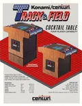
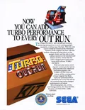

Marca cada prueba al hacerla. Se guarda en este móvil. Al acabar, pulsa Enviar resultados y pégamelos.
0 de 11 hechas
Juegos (11)
114
Toki
que B escupa y A salte. ¿El J2 juega en su turno con sus mandos?
🔎 Mirar en la bartop:
¿A dos se juega a la vez o por turnos?
Otras dudas de la guía (1; no hace falta buscarlas)
Final (cuenta el desenlace): el objetivo es vencer a Vookimedlo, volver a ser humano y rescatar a Miho. ⚠️ Cómo es el final se ve al acabar el vídeo de «Vídeos».
🔁 Pasado de MAME 2003 a FinalBurn Neo el 2026-11-17: comprobar que arranca, la velocidad, el sonido y los botones de la tabla; el botón 3 del juego pasa a R (copia nueva, del Rikiki). A la copia le faltan chips PAL o PROM que FinalBurn Neo no suele necesitar. Además: qué hace cada botón. Según Wikipedia son puñetazo, patada y salto.
🔎 Mirar en la bartop:
⚠️ Wikipedia nombra los tres botones, pero no su orden.
Puñetazo: Dar un puñetazo — ¿es así?
Patada: Dar una patada — ¿es así?
Salto: Saltar — ¿es así?
Otras dudas de la guía (2; no hace falta buscarlas)
Final (cuenta el desenlace): ⚠️ no lo describen las fuentes; está en el capítulo «Ending» del vídeo.
⚠️ No hay una guía de las fases; el vídeo de «Vídeos» las marca una a una.
Botones
Atacar ⚠️
Saltar ⚠️
⚠️ Tercer botón
Empezar
Meter una moneda
+
Salir del juego
116

Track & Field
Qué botón es cada pierna y cuál la acción; si la acción queda en Y, valorar pasarla a R.
🔎 Mirar en la bartop:
¿A dos se juega a la vez o por turnos?
Botones
Correr (pulsar alternando con A) ⚠️
Correr (pulsar alternando con B) ⚠️
Saltar o lanzar ⚠️
Empezar
Meter una moneda
+
Salir del juego
117
Trojan
qué hacen B y A (atacar con la espada y saltar, o cubrirse con el escudo). ¿El J2 juega en su turno con sus mandos? Según las guías: un botón da con la espada y el otro sube el escudo (sin arma, puñetazo y patada); se salta con el joystick hacia arriba.
🔎 Mirar en la bartop:
¿A dos se juega a la vez o por turnos?
Botón de espada (B o A): Atacar con la espada (sin arma: puñetazo) — ¿es así?
Botón de escudo (B o A): Cubrirse con el escudo (sin arma: patada) — ¿es así?
que arranque (el 2026-11-05 se cambió el zip por uno completo, de la colección FB Alpha 0.2.97.39). Después, que B aspire o lance a los enemigos y A salte. Los dos jugadores a la vez.
🔁 Pasado de MAME 2003 a FinalBurn Neo el 2026-11-17: comprobar que arranca, la velocidad, el sonido y los botones de la tabla; el botón 3 del juego pasa a R. A la copia le faltan chips PAL o PROM que FinalBurn Neo no suele necesitar. Además: cómo responde el volante con el joystick y qué botón acelera y cambia de marcha. Según Wikipedia, el mueble tiene volante, palanca de dos marchas (corta y larga) y pedal de acelerador.
🔎 Mirar en la bartop:
Volante (): Girar — ¿es así?
Pedal de acelerador: Acelerar — ¿es así?
Palanca de cambios (corta y larga): Cambiar de marcha — ¿es así?
Otras dudas de la guía (1; no hace falta buscarlas)
Rondas por zonas urbanas y rurales, con cambios de tiempo y de hora del día. ⚠️ No hay una lista de escenarios.
Botones
Girar (volante) ⚠️
⚠️ Acelerar
⚠️ Cambiar de marcha
⚠️ Tercer botón
Empezar
Meter una moneda
+
Salir del juego
120

Turbo Out Run
que el joystick gire (ajuste ya puesto, como en Out Run), B acelere, A frene, R cambie de marcha y X dé el nitro. Según el código de FB Alpha 2018: botón 1 acelerar, botón 2 frenar, botón 3 cambiar de marcha y botón 4 nitro.
🔎 Mirar en la bartop:
Botón 4 (X): Activar el turbo (nitro) — ¿es así?
Botones
Girar
Acelerar
Frenar
Cambiar de marcha (corta / larga: cada pulsación alterna)